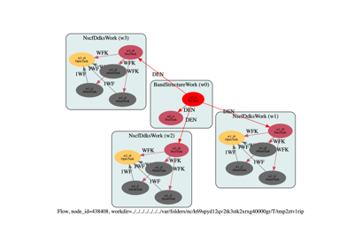

Flow Gallery¶
This gallery contains python scripts to generate AbiPy flows from the command line.
Run the scripts to generate the directory with the flow and then use abirun.py to execute the flow.
Alternatively, one can use the -s option to generate the flow and run it immediately with the scheduler.
Use --help for further information on the available options.
Warning
The following examples show how to use python and the AbiPy API to generate and run Abinit calculations in a semi-automatic way. These examples are not supposed to produce physically meaningful results as input parameters are usually underconverged.


